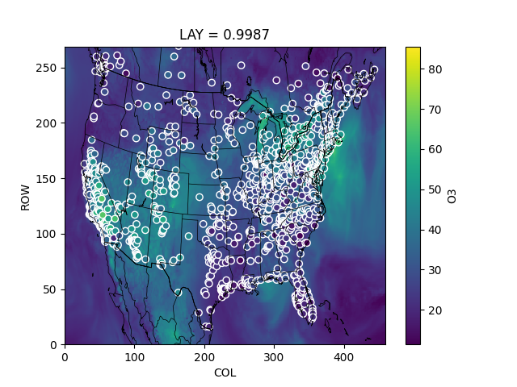
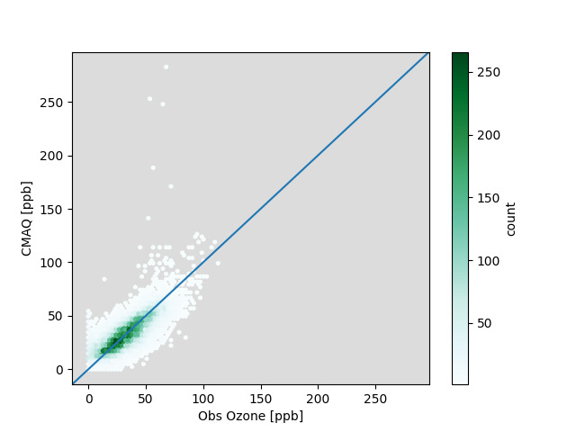

Note
Go to the end to download the full example code
Pairing CMAQ with AirNow Ozone¶
This example performs a simple comparison of CMAQ to AirNow for ozone.
- 
- 
| | ozone | CMAQ_O3 |
|:------|-----------:|---------------:|
| count | 28945 | 28945 |
| mean | 33.4034 | 33.1923 |
| std | 16.2082 | 14.3956 |
| min | 0 | 0.0621035 |
| 25% | 22 | 22.5295 |
| 50% | 32.5 | 31.7413 |
| 75% | 44 | 42.6466 |
| max | 113 | 282.538 |
| r | 1 | 0.771677 |
| mb | 0 | -0.21112 |
| nmb | 0 | -0.00632032 |
| fmb | 0 | -0.00634036 |
| ioa | 1 | 0.87246 |
import pyrsig
import pycno
cmaqkey = 'cmaq.equates.conus.aconc.O3'
datakey = 'airnow.ozone'
api = pyrsig.RsigApi()
# Return CMAQ for default bbox (-126, 24, -66, -50) for a single day
ds = api.to_ioapi(cmaqkey, bdate='2018-07-01')
# pair_rsigcmaq will match the bbox, bdate, and edate from the CMAQ dataset.
df = pyrsig.cmaq.pair_rsigcmaq(ds, 'O3', datakey)
# Or, use persist=True to save pairing to disk and return output path instead.
# import pandas as pd
# outpath = pyrsig.cmaq.pair_rsigcmaq(ds, 'O3', datakey, persist=True)
# df = pd.read_csv(outpath)
# Calculate stats table with common quantile, correlation, and bias metrics
statsdf = pyrsig.utils.quickstats(df[['ozone', 'CMAQ_O3']], 'ozone')
# Print them for the user to review.
print(statsdf.to_markdown())
dds = ds['O3'].mean('TSTEP')
ddf = df.groupby(['x', 'y'], as_index=False).mean(numeric_only=True)
qm = dds.plot()
qm.axes.scatter(
ddf.x, ddf.y, c=ddf.ozone, norm=qm.norm, cmap=qm.cmap, edgecolor='w'
)
pycno.cno(ds.crs_proj4).drawstates()
qm.figure.savefig('ozone_map.png')
vmax = df[['ozone', 'CMAQ_O3']].max().max()
ax = df.plot.hexbin(x='ozone', y='CMAQ_O3', mincnt=1, extent=(0, vmax, 0, vmax))
ax.set(xlabel='Obs Ozone [ppb]', ylabel='CMAQ [ppb]', facecolor='gainsboro')
ax.axline((0, 0), slope=1, label='1:1')
ax.collections[0].colorbar.set_label('count')
ax.figure.savefig('ozone_scatter.png')
Total running time of the script: ( 0 minutes 45.573 seconds)